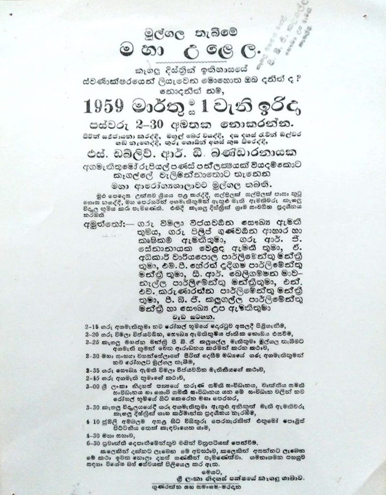
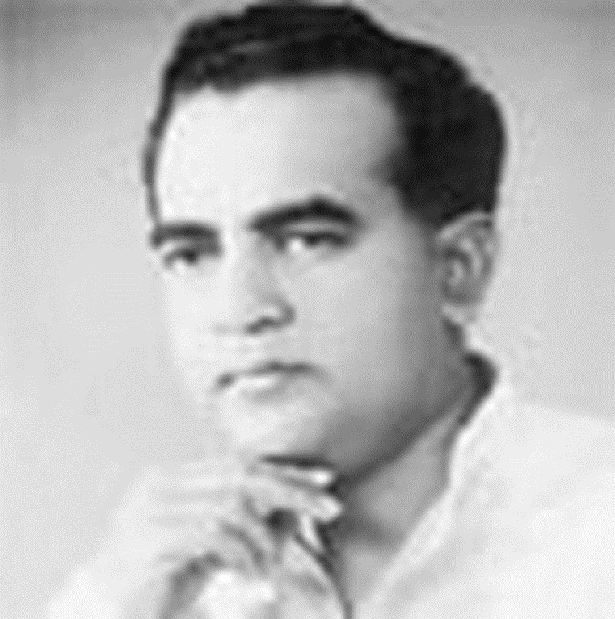
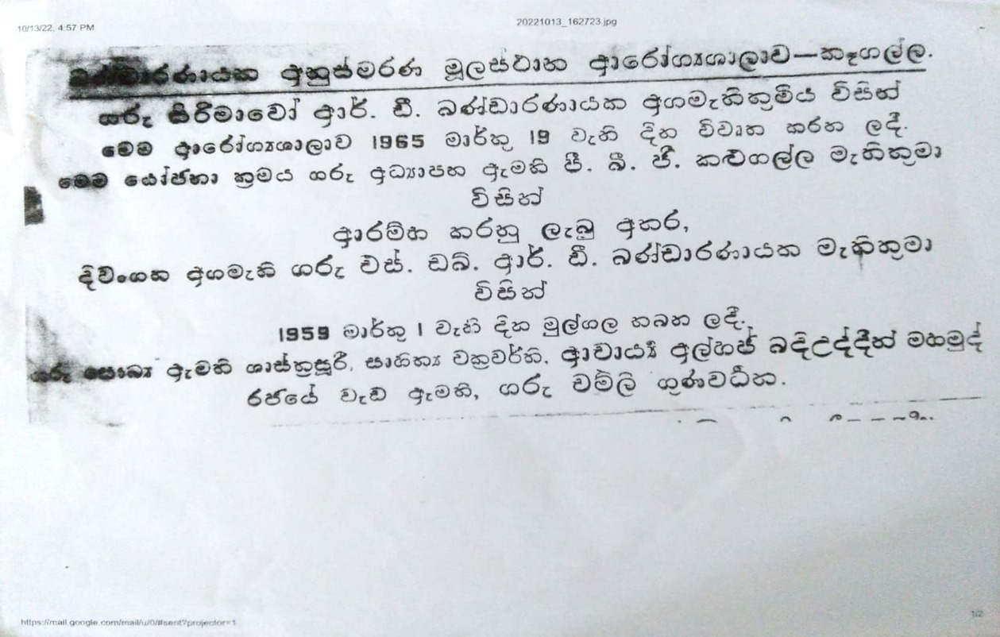

The first hospital was established at the location where the Kegalle Court Complex now stands.
Early Leadership:
• 1889: Dr. J. Carberry – first Health Medical Officer
• 1898: Dr. J. Tilakaratne – first Sri Lankan Medical Officer
• 1914: Dr. Loyd Perera – first District Medical Officer (DMO)
Hon. Punchi Banda Gunathillake Kalugalla (1920–2007), lawyer and politician, was instrumental in the establishment and growth of healthcare infrastructure in Kegalle. His vision and advocacy laid the foundation for the hospital’s modern identity.


On 19th March 1965, the District General Hospital Kegalle was officially inaugurated at its current premises. This date marks the beginning of a new era for our hospital and is celebrated as our annual anniversary.

District General Hospital Kegalle stands as the premier healthcare institution in the district. We serve as the primary provider of Major Specialties for approximately 150,000 people in the immediate hospital area, and function as the key referral center providing Sub-Specialty care to the entire Kegalle District population of 880,000. At the same time, we remain committed to our foundational duty of providing primary healthcare services to our identified catchment population.
Hospital Statistics (2025):
• Bed Strength: 809
• Total Workforce: 1,500+
• Consultants: 39
• Medical Officers: 205
• Nursing Officers: 574
• Healthcare Assistants: 423
• Paramedical & Minor Staff: ~650
• Major Specialties: 08
• Sub-Specialties: 31
Our Daily Impact:
• Annual Admissions: 89,697
• Average Daily Admissions: 246
• Bed Occupancy Rate: 61%
• Average Daily ETU Admissions: 82
• Annual OPD Visits: 319,735
• Average Daily OPD Patients: 876
• Annual Clinic Visits: 414,405
• Average Daily Clinic Visits: 1,135
• Specialized Clinics: 32
• Specialized Units: Blood Bank, Dialysis Unit, Day Treatment Unit, Chemotherapy Unit
Guided by the Directorate of Healthcare Quality & Safety, our Quality Management Unit (QMU) drives a culture of continuous improvement. Accurate and complete data enables evidence-based decision-making, policy formulation, and more precise resource allocation. Staff-led Kaizen innovations continuously improve the way we work and care for our patients.